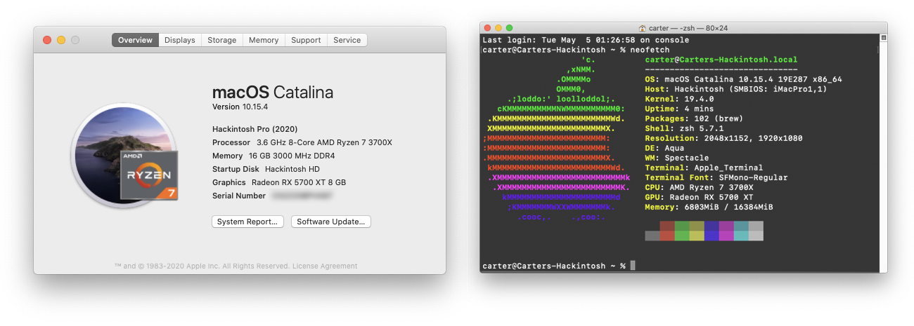

ACPI


Tracking the progress of my OpenCore Hackintosh build. Currently dual-booting macOS Catalina and Windows 10.
EFI: Copy of current EFI directory from the macOS boot driveEFI_Install: Copy of EFI directory from the USB drive used during macOS installation
View the build on PCPartPicker: https://pcpartpicker.com/list/nppTDx
Open Terminal and format the target USB drive as with the following command:
diskutil partitionDisk /dev/{YOUR_DISK_ID} GPT JHFS+ "USB" 100%
Create the bootable macOS installer:
sudo /Applications/Install\ macOS\ Catalina.app/Contents/Resources/createinstallmedia --volume /Volumes/USB
Once the program finishes, your USB drive should now be called Install macOS Catalina
WhateverGreen.kext (v1.3.4)
Use OpenCore Configurator to mount the EFI partition of the USB drive
EFI/CLOVER/kexts/Other/ on the USB drive EFI partitionVirtualSmc.efi to EFI/CLOVER/drivers/UEFI/ on the USB drive EFI partitionThe exact kexts and drivers I used during my installation can be found in EFI_install/.
The OpenCore configuration for the installation is heavily based upon corpnewt's r/Hackintosh Vanilla Desktop Guide for the Coffee Lake microarchitecture. The major difference is with how the iGPU is enabled because I encountered difficulties when using device property injections. Each section of the configuration used during installation is documented below. A sanitized version of the config file can be found in EFI_install/CLOVER/. You will need to use OpenCore Configurator or macserial to generate a valid serial number and board serial number for the iMac19,1 SMBIOS.
ACPI
Boot

Boot Graphics

CPU

Devices


Disable Drivers

GUI

Graphics

Kernel and Kext Patches

Rt Varibles

SMBIOS

System Parameters

Enter Advanced Mode and Load Optimized Defaults to reset the default BIOS settings. Modify the following settings:

Install macOS Catalina as the OpenCore boot volume Macintosh SSDMac OS Extended (Journaled) or APFS (will be reformatted as APFS during installation)GUID Partition MapMacintosh SSD drive as the destination
Boot macOS Install from Macintosh SSD from the OpenCore menuBoot macOS from Macintosh SSD from the OpenCore menu
Macintosh SSD and copy over the entire EFI directory from the USB driveBoot macOS from Macintosh SSD from the OpenCore menuNote: You can now remove the USB drive but keep it handy for debugging issues with your Hackintosh.
Macintosh SSD
-wegnoegpu boot argumentagdpmod=pikera boot argumentIntelGFX fieldPciRoot(0x0)/Pci(0x2,0x0)
AAPL,ig-platform-id - 0300983E - DATA

Inject IntelVDA Decoder system parameter. 
Note: You should also make these changes to your USB drive OpenCore configuration so that it can properly boot your system if the Macintosh SSD EFI partition gets messed up. If you don't update the configuration, you'll have to swap back to using the integrated graphics instead of the discrete graphics card.
Apple's USB driver implementation restricts macOS to only 15 HS/SS ports. During the installation process, we utilized RehabMan's USBInjectAll kext and USB port limit kext patches to com.apple.iokit.IOUSBHostFamily and com.apple.driver.usb.AppleUSBXHCI to circumvent this restriction. While useful during installation, it is generally recommended that these workarounds be removed in favor of a custom SSDT or port injector kext for the final system configuration to avoid buffer overruns and sleep/wake issues. In order to map out the custom port injection for the system, we will be using corpnewt's USBMap Python script and following along with the process described in Carl Mercier's YouTube video.
If you have the Gigabyte Z390 AORUS PRO WIFI motherboard and want the same USB port mapping I utilize, you can download my USBMap.kext, SSDT-USBX.aml, and SSDT-USBX.dsl and skip to Step 5.
Add the change EHC1 to EH01 and change EHC2 to EH02 patches to the ACPI OpenCore configuration on the EFI partition of Macintosh SSD and reboot

Open Terminal and run the following commands to download and execute the USBMap script:
git clone https://github.com/corpnewt/USBMap
cd USBMap
chmod +x USBMap.command
./USBMap.command
Press d then [enter] to begin the port discovery process. Using a USB device (e.g. flash drive), systematically test each external USB port to identify its corresponding ID. The complete USB port layout for the Gigabyte Z390 AORUS PRO WIFI motherboard is detailed in the image below. Once the desired ports have been identified, press q then [enter] to return to the main menu.

Press p then [enter] to begin creating the custom port mapping kext
a then [enter] to enable all ports2,3,4,5,9,11,12,15,16,18,25 → HS02,HS03,HS04,HS05,HS09,HS11,HS12,USR1,USR2,SS02,SS09
HS14 and enable one of the disabled USB 2.0 portsk then [enter] to build the custom USBMap.kext fileUSBMap.kext → EFI/CLOVER/kexts/Other/SSDT-USBX.aml → EFI/CLOVER/ACPI/patched/SSDT-USBX.dsl → EFI/CLOVER/ACPI/patched/Macintosh SSD
change EHC2 to EH02 patch (not present on this system)com.apple.iokit.IOUSBHostFamily kext patchcom.apple.driver.usb.AppleUSBXHCI kext patchUSBInjectAll.kext from EFI/CLOVER/kexts/Other/ on the EFI partition of Macintosh SSDThe Intel CNVi modules that provide integrated Wi-Fi and Bluetooth functionality on motherboards are not natively supported by macOS but can be enabled using the IntelBluetoothFirmware kext on supported devices. The Gigabyte Z390 AORUS PRO WIFI contains a compatible Intel Wireless-AC 9560 CNVi (Vendor ID: 0x8087, Device ID: 0x0AAA). Hackintool can be used to determine the specific model on your motherboard (System > Peripherals > Bluetooth).
* Note: You must enable the internal USB port used by the CNVi module during the USB mapping process.
Download the latest release and place the two kexts in EFI/CLOVER/kexts/Other/. Reboot and you should be able to use Bluetooth on your Hackintosh.

FileVault is used to encrypt the startup disk on your Hackintosh. Enabling it is entirely optional but probably a good idea for the security conscious, especially if you are building a portable system. Before turning on the feature, you will need to make sure you have several drivers installed to allow OpenCore to interact with the encrypted drive. These instructions are based on the advice from this tonymacx86 comment and this vanilla laptop guide.
AppleImageCodec.efiAppleKeyAggregator.efiAppleKeyFeeder.efiAppleUITheme.efiFirmwareVolume.efiHashServiceFix.efiEFI/CLOVER/drivers/UEFI/:
AppleGenericInput.efiAppleUiSupport.efiMacintosh SSD
PrebootPreboot from hidden volumes (if present)Open System Preferences > Security & Privacy and navigate to the FileVault tab
Turn On FileVault and select an option for setting the recovery key
Restart your system, which should now default to the FileVault Preboot from Preboot option, and enter your password at login to decrypt the system drive.
Note: You should also make these changes to your USB drive OpenCore configuration so that it can properly boot your system if the Macintosh SSD EFI partition gets messed up. If you don't update the configuration, then the OpenCore bootloader will not be able to properly handle the FileVault-encrypted drive.
Open Terminal and enter the following command:
sudo trimforce enable
Verify TRIM was enabled in System Report:

For some reason, About This Mac and System Report do not properly identify the processor and list it as an 'Intel Core i9' instead of an 'Intel Core i7.' This can easily be fixed by using OpenCore Configurator to set the CPU Type to 0x0705 and rebooting.

The default iMac19,1 SMBIOS configuration used in this build sets PlatformFeature=0x22, which indicates that the system lacks user-upgradable memory and therefore hides the Memory tab on About This Mac (as seen above) and any empty memory slots in the System Report. This can easily be fixed by using OpenCore Configurator to set PlatformFeature=0x20 in the SMBIOS section and rebooting.

Follow these instructions to prevent the Windows drive from automatically mounting in macOS:
Open Terminal and enter the following command to get the Volume UUID:
diskutil info /Volumes/{YOUR_WINDOWS_DRIVE_NAME}
Enter sudo vifs to add the following line to /etc/fstab:
UUID={YOUR_UUID} none ntfs rw,noauto
Restart your system and the Windows partition will no longer automatically mount.
Screenshots of my current BIOS settings on my working (i.e. stable) system.
Tweaker

Advanced CPU Settings

Advanced Memory Settings

Settings
Platform Power

IO Ports

USB Configuration

SATA and RST Configuration

Miscellaneous

Boot

Smart Fan 5 Settings

A sanitized version of my final config file can be found in EFI/CLOVER/. Each section of the configuration in OpenCore Configurator is also documented below.
ACPI


Boot

Boot Graphics

CPU

Devices


Disable Drivers

GUI

Graphics

Kernel and Kext Patches

Rt Varibles

SMBIOS

System Parameters

All values are the average of three runs
See the GitHub repository issues tracker